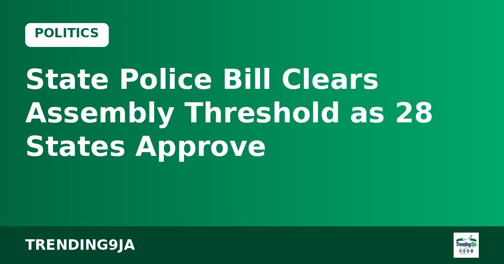
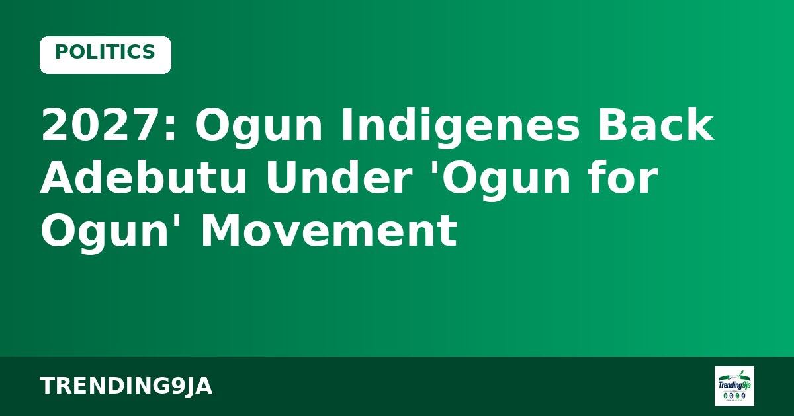

2027: Ogun Indigenes Back Adebutu Under 'Ogun for Ogun' Movement
Ogun State residents and defecting APC members have pledged support for PDP governorship hopeful Oladipupo Adebutu ahead of the 2027 elections.

The National Assembly is getting ready to send the proposed State Police Bill to President Bola Tinubu for his approval after 28 state parliaments endorsed the constitutional amendment.
According to Punch, the Clerk to the National Assembly, Kamoru Ogunlana, revealed in a statement on Tuesday that the number of state legislatures supporting the legislation has surpassed the required two-thirds majority. The Nigerian Constitution mandates that at least 24 of the 36 state assemblies must support a constitutional alteration before it can become law.
Ogunlana noted that administrative checks have been conducted on the reports, votes, and official proceedings sent by the various state assemblies to ensure that the submissions accurately represent their decisions. He added that the verification process is vital before final transmission under the provisions of the Acts Authentication Act of 2004.
The proposed constitutional amendment was initially sent to all 36 state Houses of Assembly on September 16, 2026. State lawmakers were given a 30-day timeframe to deliberate on the document and send back their resolutions. Although the original deadline lapsed on October 15, the clerk explained that his office kept receiving incoming reports from state assemblies.
Addressing legislative rules, Ogunlana clarified that Section 9 of the 1999 Constitution does not require a third reading for bills altering the constitution, unlike standard federal legislation.
The legislation aims to reform the 1999 Constitution to allow for the creation of state police forces across the country. Supporters argue that decentralising policing will help tackle the security issues facing several regions in Nigeria.
Sources: Punch
← More Politics stories
Ogun State residents and defecting APC members have pledged support for PDP governorship hopeful Oladipupo Adebutu ahead of the 2027 elections.

Gombe State University ASUU members have rejected their recent salary arrears and threatened a fresh strike over non-implementation of the 2025 agreement.

INEC has reaffirmed its commitment to removing barriers for Persons with Disabilities ahead of the 2027 general elections, according to Punch.
Nigeria's trending news, politics and entertainment, straight to your email.
By subscribing you agree to our Privacy Policy. Unsubscribe any time.